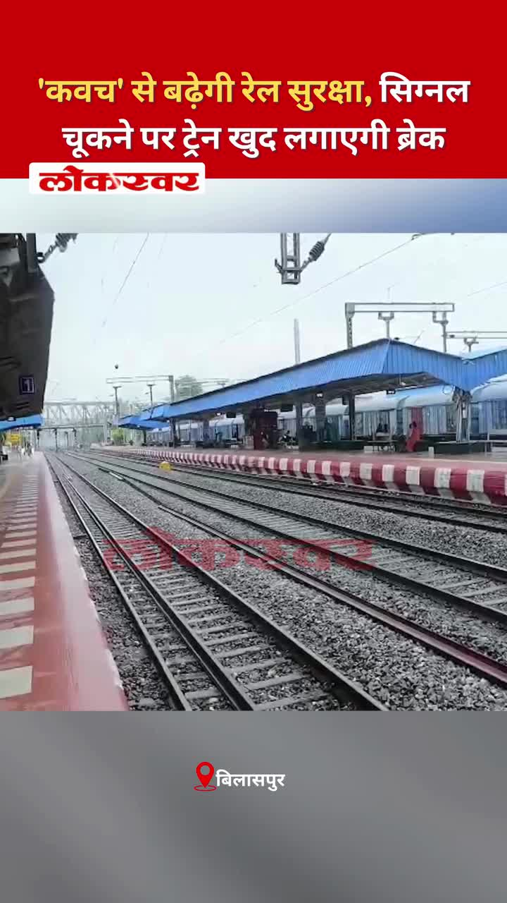
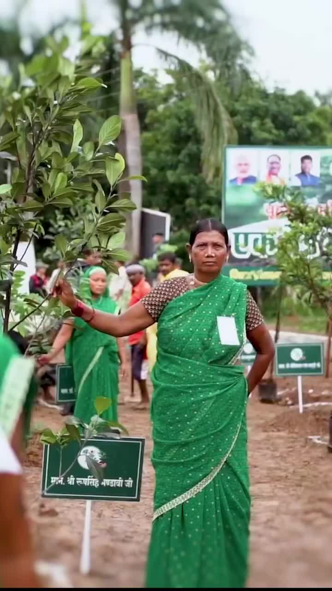
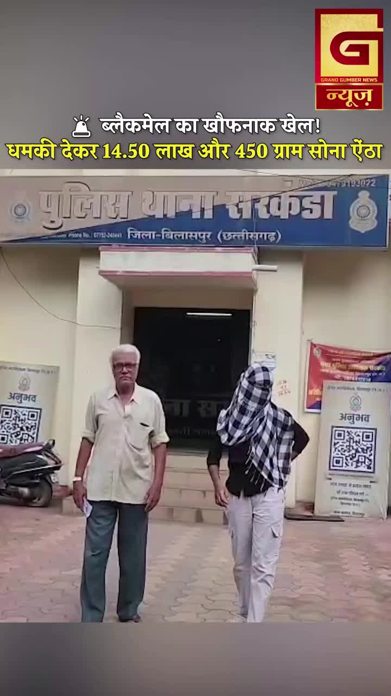
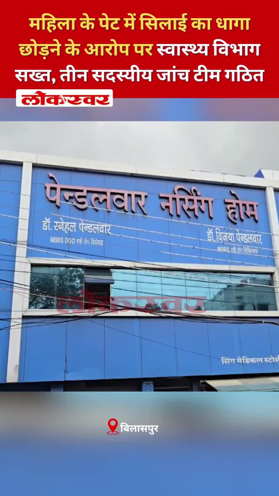
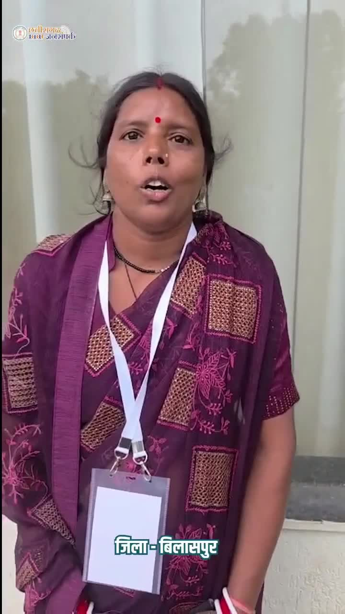

Bilaspur News Hub
1
BUSINESS
3
EDUCATION
16
GOVERNMENT
2
HEALTH
4
INFRASTRUCTURE
22
INSTAGRAM NEWS
3
NEWS
3
OTHER
17
POLICE
1
SOCIAL
4
YOUTUBE VIDEOS
BUSINESS1

The Hitavada · Scraped: 2026-08-04 08:21:20
Illegal hawkers are encroaching on Veterinary College Road, disrupting traffic and affecting local businesses. Municipal authorities plan to evict them and enforce street vending regulations.
EDUCATION3

CG Wall · Published: Tue, 04 Au | Scraped: 2026-08-04 13:38:34
Government schools in the region are facing a severe teacher shortage, forcing students to rely on YouTube for lessons while blackboards remain locked. This raises questions about accountability in the education system and the quality of learning. Authorities need to address the staffing crisis promptly.

The Hitavada · Scraped: 2026-08-04 08:21:20
डॉ. बाबासाहेब अम्बेडकर प्रौद्योगिकी विश्वविद्यालय (आरटीएमएनयू) ने शैक्षणिक वर्ष 2026‑27 के लिए अपने विश्वविद्यालय छात्रावास में नए प्रवेश निलंबित कर दिए हैं। यह निर्णय संभवतः क्षमता या प्रशासनिक कारणों से लिया गया है, जिससे भविष्य के छात्रों पर प्रभाव पड़ सकता है।

Government Engineering College Bilaspur · Published: 2026-08-04 | Scraped: 2026-08-04 16:12:46
The Government Engineering College Bilaspur has issued a notice regarding the transfer of students or staff. Details about the transfer process and deadlines are included in the announcement.
GOVERNMENT16

Nai Dunia Bilaspur · Published: Tue, 04 Au | Scraped: 2026-08-04 04:58:43
The Chhattisgarh High Court declared moving a suspect from Haryana without transit remand illegal and quashed the detention and remand orders, reinforcing procedural safeguards.

Nai Dunia Bilaspur · Published: Tue, 04 Au | Scraped: 2026-08-04 08:21:20
Patwaris in Bilaspur have been handling duties for two decades but still face salary inconsistencies, causing widespread anger. They demand resolution of the long-standing wage disparity.

CG Wall · Published: Tue, 04 Au | Scraped: 2026-08-04 08:21:20
BJYM has named Mahirshi Bajpayee as the new in-charge of its Bilaspur Madhya Mandal to strengthen the youth wing. The move aims to boost organizational activity and outreach in the region.

Lokswar · Published: Tue, 04 Au | Scraped: 2026-08-04 08:21:20
The Chhattisgarh Health Department has transferred senior officials and appointed new heads for Bilaspur and Raipur divisions. The changes aim to improve administrative efficiency.

Nai Dunia Bilaspur · Published: Tue, 04 Au | Scraped: 2026-08-04 12:00:39
A broker used tampered revenue records to sell the same land a second time after 34 years in Bilaspur. This case highlights serious flaws in land record management and potential fraud.
Nai Dunia Bilaspur · Published: Tue, 04 Au | Scraped: 2026-08-04 12:00:39
The tehsil record room in Bilaspur has remained closed for five days, halting official work and causing public inconvenience. Employees cite staff shortage as the reason for the shutdown.

CG Wall · Published: Tue, 04 Au | Scraped: 2026-08-04 13:38:34
Abhishek Diwan, known for his efficient and responsible administration, has moved to Raipur after serving in Bilaspur for about 1.5 years. His tenure was marked by notable developmental work and an approachable style. Officials and locals have praised his contributions.

Lokswar · Published: Tue, 04 Au | Scraped: 2026-08-04 13:38:34
वन मंत्री केदार कश्यप के निर्देशन में विभाग ने संगठित वन अपराध और हाथीदांत तस्करी पर नकेल कसते हुए तीन आरोपियों को गिरफ्तार किया।

CG Wall · Published: Tue, 04 Au | Scraped: 2026-08-04 16:12:46
The Chhattisgarh High Court, citing a six-year delay in justice, ordered the SDM to deliver a verdict within 30 days, emphasizing swift judicial decisions.

Lokswar · Published: Mon, 03 Au | Scraped: 2026-08-03 20:59:08
The BJP Yuva Morcha has named Mahishi Bajpayee as the new in-charge of its Bilaspur Madhya Mandal to strengthen and activate the organization. The appointment aims to boost youth engagement in the region.

The Hitavada · Scraped: 2026-08-04 08:21:20
The Supreme Court ruled that states may withdraw FIRs filed against students involved in NEET protests, easing legal pressure on them. This decision aims to reduce harassment of student activists.
The Hitavada · Scraped: 2026-08-04 08:21:20
The Lok Sabha passed a bill to increase the number of Supreme Court judges without holding a debate. The move seeks to address the growing case backlog in the higher judiciary.
The Hitavada · Scraped: 2026-08-04 08:21:20
A court acquitted Brij Bhushan in a sexual harassment case, ending the legal proceedings against him. The verdict has sparked mixed reactions among legal experts and the public.
The Hitavada · Scraped: 2026-08-04 08:21:20
The government has disbursed the first installment of interim relief amounting to Rs 160 crore to 75,000 affected households. This aid aims to provide immediate financial support to those impacted by recent disasters.
The Hitavada · Scraped: 2026-08-04 08:21:20
नागपुर नगर निगम ने उच्च न्यायालय को बताया कि एक नया ‘प्रदूषण‑मुक्त नागपुर’ पोर्टल शोर की शिकायतों के लिए एकल खिड़की के रूप में काम करेगा। यह पहल शिकायतों को दर्ज करने और शोर प्रदूषण को अधिक कुशलता से संबोधित करने को सुव्यवस्थित करेगी।

G News Bilaspur · Published: 2026-08-04 | Scraped: 2026-08-04 16:12:46
Arriving in Bilaspur, Devendra Yadav criticised the BJP government and raised concerns about the state's health services.
HEALTH2

Lokswar · Published: Tue, 04 Au | Scraped: 2026-08-04 13:38:34
बिलासपुर के सबसे बड़े सरकारी अस्पताल सिम्स में हजारों मरीज हाई-प्रेशर ऑक्सीजन सिस्टम का उपयोग करते हैं, जिससे सुरक्षा व्यवस्था पर सवाल उठ रहे हैं।
The Hitavada · Scraped: 2026-08-04 08:21:20
The Centre proposed new rules for two-wheeler ambulances to improve emergency medical access, especially in congested areas. The guidelines aim to standardize safety and response times for these vehicles.
INFRASTRUCTURE4

Nai Dunia Bilaspur · Published: Tue, 04 Au | Scraped: 2026-08-04 08:21:20
A weak culvert on NH45 near Champi collapsed, blocking the road and stranding a bus carrying 35 passengers. The incident follows years of heavy truck traffic using the fragile structure.

Lokswar · Published: Tue, 04 Au | Scraped: 2026-08-04 16:12:46
Two laborers died after being electrocuted at a construction site on Ring Road No-2, highlighting safety lapses at ongoing building projects.

The Hitavada · Scraped: 2026-08-04 08:21:20
A four-year-old bridge over the Kanhan river has developed severe potholes, exposing iron bars and posing safety risks. Authorities have been urged to repair the structure to prevent accidents.

BREAKINGBasazhal bridge collapses, traffic diverted / बासाझाल पुल टूटने के बाद वैकल्पिक मार्ग से आवागमन
G News Bilaspur · Published: 2026-08-04 | Scraped: 2026-08-04 16:12:46
The Basazhal bridge collapsed, prompting authorities to issue alerts and divert traffic via an alternative route.
INSTAGRAM NEWS22

Bilaspur police arrested two men in Kota for illegal cow slaughter and beef sales. The crackdown underscores strict enforcement against cattle theft and meat trafficking.
The post is a generic Instagram update with no additional details provided.
Another generic Instagram post from @bilaspurdiaries lacking specific content.
A young man drowned in a dam, and his body was later recovered. The SDRF conducted an extensive search operation in the area. Authorities are investigating the incident.
A former minister erupted in anger over a proposed liquor shop and confronted the excise officer by phone. He criticized the decision and demanded its reversal. The issue has sparked local debate.

Kavach will boost rail safety, auto‑braking trains on signal miss. This aims to prevent collisions and improve reliability. Indian Railways plans nationwide rollout.

छत्तीसगढ़ सरकार पर्यावरण संरक्षण को जनभागीदारी का अभियान बना रही है। 'एक पेड़ माँ के नाम' अभियान के तहत हरित, समृद्ध और पर्यावरण-सुरक्षित छत्तीसगढ़ का संकल्प और सशक्त हो रहा है।हमारे व्हॉट्सऐप चैनल से जुड़ने के लिए लिंक पर क्लिक करें...https://whatsapp.com/channel/0029VbBdXyRJf05ivBgauG3V#EkPedMaaKeNaam #HaritChhattisgarh #PlantationDrive #EnvironmentProtection @moefcc @vishnudsai @ChhattisgarhCMO @ForestCgGov by @bilaspurdist

A significant blackmail incident has come to light in Bilaspur's Sarkanda area, prompting police investigation. The accused are said to have targeted a young woman, demanding money and compromising her family.
A bus driver caught driving under the influence was sentenced to three days in jail and fined 15,000 rupees by Durg authorities. The case highlights strict enforcement of drunk driving laws.
A guard at a liquor shop was stabbed during a midnight robbery. The assailants fled after looting liquor bottles and a DVR recording device. Police have launched an investigation to identify the culprits.

A woman alleged that a surgical thread was left inside her abdomen after a procedure. The health department has formed a three-member committee to investigate the incident. Action will be taken based on the probe findings.
The post asks viewers to identify a river in Korba, Chhattisgarh. It appears to be a community engagement or quiz about local geography. Responses may help raise awareness of the region's water bodies.
During the weekly Janadarshan, citizens from across the district presented their grievances. The collector listened to each complaint and promised timely resolutions. The event highlighted the government's commitment to public welfare.

Under the government's digital initiatives, women using drones are earning substantial income, turning into 'Lakhpati Didis'. This program showcases the impact of modern technology on rural entrepreneurship. It aims to empower women and boost local economies.
The official Bilaspur district Instagram account shares updates, news, and community information. This post highlights recent activities and engages followers with local content.


An Instagram post highlights recent developments concerning Bilaspur's ring road, drawing attention to traffic and infrastructure changes.


Two young women were filmed climbing out of a moving car's sunroof on a Bilaspur street to create an Instagram reel, prompting safety concerns and a viral video.


Collector emphasizes that during monsoon, protecting lives and supporting farmers are top priorities, with coordinated relief and safety measures.


New anti‑paper‑leak law passed in Lok Sabha aims to curb exam cheating, restoring student confidence through stricter penalties.


Chief Minister Vishnu Deo Sai highlighted that preserving heritage and culture defines the state's identity and pride.
NEWS3

Lokswar · Published: Tue, 04 Au | Scraped: 2026-08-04 08:21:20
Meteorologists warn that monsoon activity will increase across Chhattisgarh, prompting alerts in several districts. Residents are advised to stay cautious of possible heavy rains.

G News Bilaspur · Published: 2026-08-04 | Scraped: 2026-08-04 16:12:46
PRIME 04 AUG is a news bulletin aired by G News Bilaspur, covering key updates and events.

G News Bilaspur · Published: 2026-08-04 | Scraped: 2026-08-04 19:24:48
G News Bilaspur reported on 04 AUG 2026 EVN 02. The entry appears to be a placeholder or duplicate. No further details available.
OTHER3

Nai Dunia Bilaspur · Published: Tue, 04 Au | Scraped: 2026-08-04 19:24:48
Two workers were killed when an unauthorized building construction came into contact with an 11 kV power line in Bilaspur. The incident highlights the dangers of violating approved building plans and ignoring electrical safety.

The Hitavada · Scraped: 2026-08-04 08:21:20
South Korea used an AI officer to lead its first undersea mine-sweeping trial, marking a new era in autonomous naval operations. The test demonstrated the potential of AI in clearing maritime mines efficiently.
The Hitavada · Scraped: 2026-08-04 08:21:20
आईआईटी भिलाई के शोधकर्ताओं ने पीईटी प्लास्टिक कचरे को 3डी प्रिंटिंग के लिए उपयुक्त सामग्री में बदलने की विधि विकसित की है। यह नवाचार सामान्य प्लास्टिक कचरे का पुन: उपयोग करके हरित ग्रह के लिए अधिक टिकाऊ निर्माण को बढ़ावा देता है।
POLICE17

Nai Dunia Bilaspur · Published: Tue, 04 Au | Scraped: 2026-08-04 08:21:20
बिलासपुर में एक बाइक सवार महिला एक भूसे से भरे ट्रक की चपेट में आ गई, जिससे वह लगभग 25 मीटर तक घिसटती रही। यह दुर्घटना ओवरलोड वाहनों और सड़क सुरक्षा उपायों की कमी के प्रति गंभीर चिंता जताती है।

Nai Dunia Bilaspur · Published: Tue, 04 Au | Scraped: 2026-08-04 08:21:20
Armed men attacked a liquor shop in Bilaspur's Gautaur area, stabbing the security guard with a knife. The incident caused panic and injuries, prompting police investigation.

BREAKINGInterstate ivory smuggling gang busted by WCCB / अंतरराज्यीय हाथी दांत तस्करी गिरोह का भंडाफोड़
CG Wall · Published: Tue, 04 Au | Scraped: 2026-08-04 08:21:20
The Wildlife Crime Control Bureau (WCCB) dismantled a major ivory smuggling network operating across states. The operation raises questions about forest department vigilance and enforcement.

Lokswar · Published: Tue, 04 Au | Scraped: 2026-08-04 08:21:20
Police have discovered an unidentified woman's body in a field and launched an investigation to determine her identity and cause of death.
Lokswar · Published: Tue, 04 Au | Scraped: 2026-08-04 08:21:20
A bus driver was convicted for driving under the influence. He was fined ₹15,000 and sentenced to three days in jail.

Nai Dunia Bilaspur · Published: Tue, 04 Au | Scraped: 2026-08-04 13:38:34
A woman was murdered by strangulation after an illicit relationship, and her body was discarded in a field to conceal her identity. The incident highlights the severe consequences of illicit affairs and the need for swift police investigation.

Lokswar · Published: Tue, 04 Au | Scraped: 2026-08-04 13:38:34
A tractor driver was killed by stabbing following a minor dispute in Jamul police station area. The incident adds to the rising concerns over violence in local conflicts. Police have launched an investigation to apprehend the assailant.
Lokswar · Published: Tue, 04 Au | Scraped: 2026-08-04 13:38:34
A notorious serial thief was apprehended by police, leading to the recovery of stolen items valued at ₹2 lakh. The arrest follows multiple theft cases and restores confidence in law enforcement. Authorities continue to investigate further crimes.
Lokswar · Published: Tue, 04 Au | Scraped: 2026-08-04 13:38:34
जांजगीर-चांपा में दो युवकों ने चलते स्कॉर्पियो से नकली पिस्टल और तलवार लहराकर लोगों में दहशत फैलाई, जिसके बाद पुलिस ने उन्हें गिरफ्तार कर लिया।

Lokswar · Published: Tue, 04 Au | Scraped: 2026-08-04 13:38:34
बिलासपुर के सकरी थाना क्षेत्र में तेज रफ्तार ट्रक ने बाइक सवार महिला को टक्कर मार दी, जिससे उसकी मौके पर मौत हो गई।

CG Wall · Published: Tue, 04 Au | Scraped: 2026-08-04 16:12:46
The IG's review meeting decided to serve summons via WhatsApp and make video recording mandatory, aiming to make policing in Bilaspur range more transparent, accountable, and tech-driven.

CG Wall · Published: Tue, 04 Au | Scraped: 2026-08-04 16:12:46
In a shocking love marriage murder, a son-in-law was brutally killed, leading to three arrests; the case highlights severe consequences of forced unions.

CG Wall · Published: Mon, 03 Au | Scraped: 2026-08-03 20:59:08
Police used scientific evidence to secure a life sentence for a murderer in a blind murder case, despite witness changes. The investigation highlighted the reliability of forensic data over shifting testimonies.

CG Wall · Published: Mon, 03 Au | Scraped: 2026-08-03 22:56:33
Four accused, including a BJP leader's son, were arrested in a blackmail case in Bilaspur's Sarkanda area, sparking political discussions. The case highlights alleged financial extortion targeting locals.
BREAKINGSC extends IPC 498A to live-in partners / सुप्रीम कोर्ट ने लिव-इन पार्टनर्स पर भी IPC 498A लागू किया
The Hitavada · Scraped: 2026-08-04 08:21:20
The Supreme Court ruled that Section 498A of the IPC now applies to live-in partners, extending protection against cruelty. This decision broadens legal safeguards for individuals in informal relationships.
The Hitavada · Scraped: 2026-08-04 08:21:20
बीएमसी पार्षद और उनके परिवार के खिलाफ 4.39 करोड़ रुपये की भूमि धोखाधड़ी के मामले में एफआईआर दर्ज की गई है। यह मामला नगरपालिका शासन में भूमि सौदों और भ्रष्टाचार के प्रति चिंता को उजागर करता है।

G News Bilaspur · Published: 2026-08-04 | Scraped: 2026-08-04 16:12:46
A broken-down trailer caused a collision with two other trailers at Ratanpur, trapping the driver inside the cabin.
SOCIAL1
WhatsApp accounts placed under review for several users / कई व्हाट्सएप उपयोगकर्ताओं के खाते समीक्षा में डाले गए
The Hitavada · Scraped: 2026-08-04 08:21:20
Multiple WhatsApp users reported that their accounts were placed under review, causing temporary access issues. The platform cited compliance checks as the reason for the review.
YOUTUBE VIDEOS4
A viral video shows a thread emerging from a woman's abdomen, sparking health concerns. Authorities are investigating the incident and its cause.

Grand News Bilaspur reports new safety protocols may reduce train accidents. The measures aim to improve signaling and infrastructure. Officials hope for enhanced passenger safety.


Grand News Bilaspur provides final morning bulletin for 04.08.2026. It includes latest updates on local developments and official announcements. Residents are advised to stay informed.
A new development regarding cheese products has been announced in Bilaspur, offering exciting options for cheese enthusiasts. Details about the offer are expected to benefit local consumers.